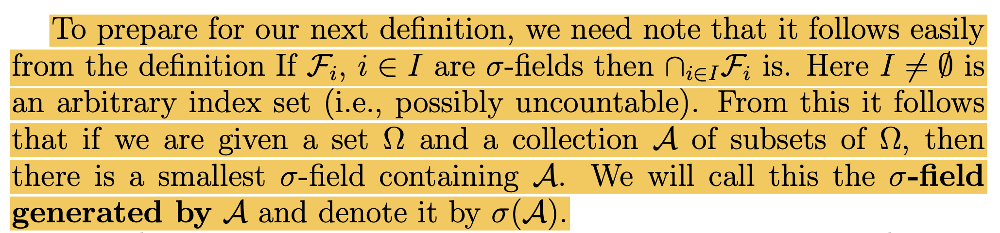
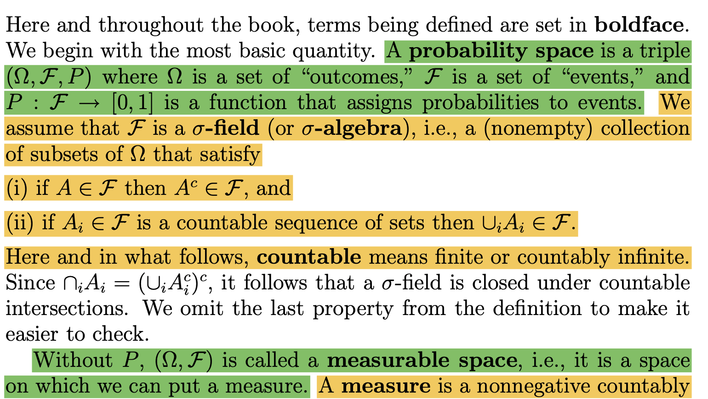
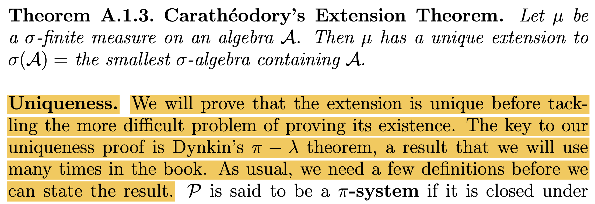

git: 'add.' is not a git command. See 'git --help'.
The most similar command is
add
On branch main
Your branch is up to date with 'origin/main'.
Changes not staged for commit:
(use "git add <file>..." to update what will be committed)
(use "git restore <file>..." to discard changes in working directory)
modified: ../../_site/about.html
modified: ../../_site/index.html
modified: ../../_site/listings.json
modified: ../../_site/posts/I. Measure Theory/2023-03-07-1wk.html
modified: ../../_site/search.json
modified: .ipynb_checkpoints/2023-04-05-5wk-checkpoint.ipynb
modified: 2023-04-05-5wk.ipynb
Untracked files:
(use "git add <file>..." to include in what will be committed)
../../_site/index (Mac-mini's conflicted copy 2023-04-01).html
../../_site/index (choegyubins-Mac-mini.local's conflicted copy 2023-03-23).html
../../_site/index (choegyubins-Mac-mini.local's conflicted copy 2023-04-01 1).html
../../_site/index (choegyubins-Mac-mini.local's conflicted copy 2023-04-01).html
../../_site/posts/I. Measure Theory/2023-03-14-2wk.html
../../_site/posts/I. Measure Theory/2023-03-14-2wk_files/
../../_site/posts/I. Measure Theory/2023-03-21-3wk (coco-desktop's conflicted copy 2023-03-23).html
../../_site/posts/I. Measure Theory/2023-03-21-3wk.html
../../_site/posts/I. Measure Theory/2023-03-21-3wk_files/
../../_site/posts/I. Measure Theory/2023-03-28-4wk (Mac-mini's conflicted copy 2023-04-01 1).html
../../_site/posts/I. Measure Theory/2023-03-28-4wk (Mac-mini's conflicted copy 2023-04-01).html
../../_site/posts/I. Measure Theory/2023-03-28-4wk (choegyubins-Mac-mini.local's conflicted copy 2023-04-01).html
../../_site/posts/I. Measure Theory/2023-03-28-4wk(2).html
../../_site/posts/I. Measure Theory/2023-03-28-4wk(2)_files/
../../_site/posts/I. Measure Theory/2023-03-28-4wk.html
../../_site/posts/I. Measure Theory/2023-03-28-4wk_files/
../../_site/posts/I. Measure Theory/2023-03-29-4wk(2).html
../../_site/posts/I. Measure Theory/2023-03-29-4wk(2)_files/
../../_site/posts/I. Measure Theory/2023-03-29-5wk.html
../../_site/posts/I. Measure Theory/2023-03-29-5wk_files/
../../_site/posts/I. Measure Theory/2023-04-05-5wk.html
../../_site/posts/I. Measure Theory/2023-04-05-5wk_files/
../../_site/posts/I. Measure Theory/Untitled.html
../../_site/posts/I. Measure Theory/Untitled_files/
../../_site/posts/I. Measure Theory/rest.html
../../_site/posts/I. Measure Theory/rest_files/
../../_site/search (choegyubins-Mac-mini.local's conflicted copy 2023-04-01).json
../../_site/site_libs (choegyubins-Mac-mini.local's conflicted copy 2023-03-23)/
no changes added to commit (use "git add" and/or "git commit -a")
Everything up-to-date
From https://github.com/guebin/AP2023
* branch gh-pages -> FETCH_HEAD
Rendering for publish:
[1/8] about.qmd
[2/8] posts/I. Measure Theory/2023-03-21-3wk.ipynb
[3/8] posts/I. Measure Theory/2023-03-07-1wk.ipynb
[4/8] posts/I. Measure Theory/2023-04-05-5wk.ipynb
[5/8] posts/I. Measure Theory/rest.ipynb
[6/8] posts/I. Measure Theory/2023-03-28-4wk.ipynb
[7/8] posts/I. Measure Theory/2023-03-14-2wk.ipynb
[8/8] index.qmd
WARNING: File /home/cgb2/Dropbox/07_lectures/AP2023/posts/I. Measure Theory/2023-03-21-3wk.ipynb in the listing 'listing' contains no metadata.
WARNING: File /home/cgb2/Dropbox/07_lectures/AP2023/posts/I. Measure Theory/2023-03-07-1wk.ipynb in the listing 'listing' contains no metadata.
WARNING: File /home/cgb2/Dropbox/07_lectures/AP2023/posts/I. Measure Theory/2023-04-05-5wk.ipynb in the listing 'listing' contains no metadata.
WARNING: File /home/cgb2/Dropbox/07_lectures/AP2023/posts/I. Measure Theory/2023-03-28-4wk.ipynb in the listing 'listing' contains no metadata.
WARNING: File /home/cgb2/Dropbox/07_lectures/AP2023/posts/I. Measure Theory/2023-03-14-2wk.ipynb in the listing 'listing' contains no metadata.
Preparing worktree (resetting branch 'gh-pages'; was at 62b78f9)
Branch 'gh-pages' set up to track remote branch 'gh-pages' from 'origin'.
HEAD is now at 62b78f9 Built site for gh-pages
[gh-pages 2a256c2] Built site for gh-pages
8 files changed, 127 insertions(+), 89 deletions(-)
create mode 100644 posts/I. Measure Theory/2023-04-05-5wk_files/figure-html/56bc586e-dc71-46f4-87e1-15f7afbbf6ee-1-e3581262-f819-4e8e-8610-728f8502cc30.png
create mode 100644 posts/I. Measure Theory/2023-04-05-5wk_files/figure-html/aa997eba-feaf-41d5-856a-d7115772fc06-1-09e8bbac-a571-4f9d-9442-b25633c94686.png
create mode 100644 posts/I. Measure Theory/2023-04-05-5wk_files/figure-html/f13ccd3a-f130-44f8-bbd9-8b329c8121c5-1-8e5ae6cb-854b-457b-b956-690a5bde6afe.png
origin https://github.com/guebin/AP2023.git (fetch)
origin https://github.com/guebin/AP2023.git (push)언젠가 필요할까
- 이론: \(|x|<\epsilon, ~\forall \epsilon>0 ~\Leftrightarrow x=0\)
(증명)
“\(\Leftarrow\)” 자명함.
“\(\Rightarrow\)”
귀류법: Suppose \(|x| > 0\)
그런데 \(\epsilon=\frac{1}{2}|x|\)로 설정하면 \(0<\frac{1}{2}|x|<|x|\)이 성립하는데 이는 모순임.
수학과의 표현
수학과의 기호
- 아래는 기호는 몇 가지 영어단어의 축약형이다.
- for all: \(\forall\)
- exists: \(\exists\)
- such that, satisfying: \({\sf s.t.}\), \({\sf st}\)
- if-then, implies, therefore: \(\Rightarrow\)
- if and only if: \(\Leftrightarrow\)
- because: \(\because\)
- therefore: \(\therefore\)
- quod erat: \(\square\), \(\blacksquare\)
- 예시1: 모든 실수 \(x\)에 대하여, \(x^2\)은 양수이다.
언어 - for any \(x\) in \(\mathbb{R}\), \(x^2 \geq 0\). - for arbitrary \(x \in \mathbb{R}\), \(x^2 \geq 0\). - for any choice of \(x \in \mathbb{R}\), \(x^2 \geq 0\). - for all \(x \in \mathbb{R}\), \(x^2 \geq 0\). - if \(x \in \mathbb{R}\), then \(x^2 \geq 0\).
기호 - \(\forall x \in \mathbb{R}\): \(x^2\geq 0\). - \(\forall x \in \mathbb{R}\), \(x^2\geq 0\). - \(x^2 \geq 0\), for all \(x \in \mathbb{R}\). - \(x^2 \geq 0\), \(\forall x \in \mathbb{R}\). - \(x \in \mathbb{R} \Rightarrow x^2 \geq 0\).
거의 쓰는 사람 마음임, 그런데 뉘앙스가 조금씩 다름.
- 예시2: \(\Omega\)의 임의의 부분집합 \(A\),\(B\)에 대하여, \(A=B\) 일 필요충분조건은 \(A\subset B\) 이고 \(B \subset A\) 이어야 한다.
언어 - for all \(A,B \subset \Omega\), \(A=B\) if and only if (1) \(A \subset B\) and (2) \(B \subset A\).
기호 - \(A = B \Leftrightarrow A \subset B \text{ and } B \subset A, \forall A,B \in \Omega\). - \(A = B \Leftrightarrow \big(A \subset B \text{ and } B \subset A\big), \forall A,B \in \Omega\). - \(\forall A,B \subset \Omega\): \(A = B \Leftrightarrow \big(A \subset B \text{ and } B \subset A\big)\)
의미가 때로는 모호할때가 있지만 눈치껏 알아먹어야 한다.
- 예시3: 임의의 양수 \(\epsilon>0\)에 대하여 \(|x| \leq \epsilon\)이라면 \(x=0\)일 수 밖에 없다.
언어
- If \(|x|< \epsilon\) for all \(\epsilon>0\), then \(x=0\).
- If \(|x|< \epsilon\), \(\forall \epsilon>0\), then \(x=0\).
- For all \(\epsilon>0\), \(|x|< \epsilon\) implies \(x=0\). – 틀린표현
기호 - \(|x| < \epsilon,~ \forall \epsilon>0 \Rightarrow x=0\) - \(\forall \epsilon>0: |x| < \epsilon \Rightarrow x=0\) – 애매하다? - \(\big(\forall \epsilon>0:|x| < \epsilon\big) \Rightarrow x=0\) - \(\big(\forall \epsilon>0\big)\big(|x| < \epsilon \Rightarrow x=0\big)\) – 틀린표현
기타 약어 및 상투적인 표현
- 약어
- \({\sf WLOG}\): Without Loss Of Generality
- \({\sf WTS}\): What/Want To Show
- \({\sf iff}\): if and only if
- \({\sf Q.E.D.}\): 증명완료 (쓰지마..)
- \({\sf LHS}\): Left Hand Side
- \({\sf RHS}\): Right Hand Side
- 상투적인 표현
- It suffices to show that, It is sufficient to show that
Classes of sets
Before
- 아래의 기호를 약속
- 전체집합: \(\Omega\)
- 관심있는 집합의 모임: \({\cal A} \subset 2^{\Omega}\)
- \(\Omega \neq \emptyset\), \({\cal A} \neq \emptyset\) 를 가정.
- 약속: 집합 \({\cal A} \subset 2^{\Omega}\)에 대하여 아래와 같은 용어를 약속하자.
- \(\cap\)-closed (closed under intersection) or a \(\pi\)-system: \(\forall A,B \in {\cal A}:~ A \cap B \in {\cal A}\)
- \(\sigma\)-\(\cap\)-closed (closed under countable interserction): \(\forall \{A_i\}_{i=1}^{\infty} \subset {\cal A}:~ \cap_{i=1}^{\infty} A_i \in {\cal A}\)
- \(\cup\)-closed (closed under unions): \(\forall A,B \in {\cal A}:~ A\cup B \in {\cal A}\)
- \(\sigma\)-\(\cup\)-closed (closed under countable unois): \(\forall \{A_i\}_{i=1}^{\infty} \subset {\cal A}:~ \cup_{i=1}^{\infty}A_i \in {\cal A}\)
- \(-\)closed (closed under differences): \(\forall A,B \in {\cal A}:~ A-B \in {\cal A}\)
- \(^c\)-closed (closed under complements): \(\forall A \in {\cal A}:~ A^c \in {\cal A}\)
- 우리만의 약속:
- 앞으로 서로소인 집합들에 대한 합집합은 기호로 \(\uplus\)라고 표현하겠다.
- 따라서 앞으로 \(B_1 \uplus B_2\)의 의미는 (1) \(B_1 \cup B_2\) (2) \(B_1 \cap B_2 = \emptyset\) 을 의미한다고 정의하겠다. (꼭 서로소임을 명시하지 않아도)
- \(\sigma\)-\(\uplus\)-closed 의 의미는 \(\uplus_{i=1}^{\infty}B_i \in {\cal A}, \forall \{B_i\}_{i=1}^{\infty} \subset {\cal A}:\) 의 의미이다.
- 이론: \({\cal A}\subset 2^{\Omega}\) 가 여집합에 닫혀있다면, 아래가 성립한다.
- \({\cal A}\)가 교집합1에 닫혀있음. \(\Leftrightarrow\) \({\cal A}\)가 합집합2에 닫혀있음.
- \({\cal A}\)가 가산교집합3에 닫혀있음. \(\Leftrightarrow\) \({\cal A}\)가 가산합집합4에 닫혀있음.
(증명) 생략
- 이론: \({\cal A}\subset 2^{\Omega}\)가 차집합에 닫혀있다면, 아래가 성립한다.
- \({\cal A}\)는 교집합에 닫혀있다.
- \({\cal A}\)가 가산합집합에 닫혀있다. \(\Rightarrow\) \({\cal A}\)가 가산교집합에 닫혀있다.
- \(\forall \{A_i\} \subset {\cal A},~ \exists \{B_i\} \subset {\cal A}\) such that \(\cup_{i=1}^{\infty} A_i = \uplus_{i=1}^{\infty} B_i\).5
(증명) 생략
차집합에 닫혀있다는게 엄청 좋은 거였음.
시그마필드 (\(\star\star\star\))
- 정의: 시그마필드 (\(\sigma\)-field, \(\sigma\)-algebra)
집합 \({\cal F} \subset 2^{\Omega}\)가 아래의 조건을 만족하면 \({\cal F}\)를 \(\Omega\)에 대한 시그마필드라고 부른다.
- \(\Omega \in {\cal F}\).
- \({\cal F}\)는 여집합에 닫혀있다.
- \({\cal F}\)는 가산합집합에 닫혀있다.
- 시그마필드의 정의에서 1을 생략하기도 한다. 이럴 경우는 특별히 \({\cal F}\neq\emptyset\)임을 강조한다. 1을 생략할 수 있는 논리는 아래와 같다.
- \({\cal F}\)는 공집합이 아니므로 최소한 하나의 집합 \(A\)는 포함해야 한다. 즉 \(A \in {\cal F}\).
- 2번 원리에 의하여 \(A^c \in {\cal F}\).
- 시그마필드는 합집합에 닫혀있으므로 \(A\cup A^c \in {\cal F}\).
알지브라, 필드 (\(\star\))
- 정의1: 알지브라, 필드 (algebra, field)
집합 \({\cal A}\subset 2^{\Omega}\)가 아래의 조건을 만족하면 \({\cal A}\)를 \(\Omega\)에 대한 대수라고 부른다.
- \(\Omega \in {\cal A}\).
- \({\cal A}\)는 차집합에 닫혀있다.
- \({\cal A}\)는 합집합에 닫혀있다.
- 알지브라 역시 1의 조건을 생략하기도 한다.
- 전체집합을 포함 \(\Rightarrow\) (차집합에 닫혀있음 \(\Leftrightarrow\) 여집합에 닫혀있음) \(\Rightarrow\) 따라서 대수는 여집합에 닫혀있다.
- 차집합에 닫혀있음 \(\Rightarrow\) 교집합에 닫혀있게 된다.
- 혹은 (여집합에 닫혀있음 & 합집합에 닫혀있음) \(\Rightarrow\) 교집합에 닫혀있음.
- 정의2: 알지브라의 또 다른 정의
집합 \({\cal A}\subset 2^{\Omega}\)가 아래의 조건을 만족하면 \({\cal A}\)를 \(\Omega\)에 대한 대수라고 부른다.
- \(\Omega \in {\cal A}\).
- \({\cal A}\)는 교집합에 닫혀있다.
- \({\cal A}\)는 여집합에 닫혀있다.
- 여집합에 닫혀있음 \(\Rightarrow\) (합집합에 닫혀있음 \(\Leftrightarrow\) 교집합에 닫혀있음) \(\Rightarrow\) 2번 조건을 합집합으로 바꿔도 무방
- 정의3: 알지브라의 또 또 다른 정의 (교재의 정의)
집합 \({\cal A}\subset 2^{\Omega}\)가 아래의 조건을 만족하면 \({\cal A}\)를 \(\Omega\)에 대한 대수라고 부른다.
- \(\Omega \in {\cal A}\).
- \({\cal A}\)는 여집합에 닫혀있다.
- \({\cal A}\)는 합집합에 닫혀있다.
- 알지브라의 예시
- \(\Omega = \{H,T\}\), \({\cal A} = 2^\Omega\) 일때, \({\cal A}\)는 알지브라이다. (\(|\Omega| <\infty\) 이라면 “시그마필드 = 알지브라(필드)” 이다.)
링
- 정의: 링 (ring)
집합 \({\cal A}\subset 2^{\Omega}\)가 아래의 조건을 만족하면 \({\cal A}\)를 \(\Omega\)에 대한 링이라고 부른다.
- \(\emptyset \in {\cal A}\).
- \({\cal A}\)는 차집합에 닫혀있다.
- \({\cal A}\)는 합집합에 닫혀있다.
- 여기에서 1의 조건을 생략할 수 있다. (이럴경우 특별히 \({\cal A}\neq \emptyset\) 임을 강조한다.)
- \({\cal A}\)는 공집합이 아니므로 최소한 하나의 원소 \(A\)는 가져야 한다.
- 조건2에 의하여 \(A-A\) 역시 \({\cal A}\)의 원소이다.
- 링은 차집합에 닫혀있음 \(\Rightarrow\) 링은 교집합에도 닫혀있음 \(\Rightarrow\) 링은 교집합과 합집합 모두에 닫혀 있다.
- 링과 알지브라의 차이는 전체집합이 포함되느냐 마느냐임 \(\Rightarrow\) 그런데 이 차이로 인해 알지브라는 여집합에 닫혀있지만 링은 여집합에 닫혀있지 않게 된다.
시그마링
- 정의: 시그마링 (\(\sigma\)-ring)
집합 \({\cal A}\subset 2^{\Omega}\)가 아래의 조건을 만족하면 \({\cal A}\)를 \(\Omega\)에 대한 링이라고 부른다.
- \(\emptyset \in {\cal A}\).
- \({\cal A}\)는 차집합에 닫혀있다.
- \({\cal A}\)는 가산합집합에 닫혀있다.
- 여기에서 1의 조건을 생략할 수 있다.
세미알지브라 (\(\star\star\star\))
- 정의1: 세미알지브라 (semi-algebra) // ref : 위키북스
집합 \({\cal A}\subset 2^{\Omega}\)가 아래의 조건을 만족하면 \({\cal A}\)를 \(\Omega\)에 대한 세미알지브라 라고 부른다.
- \(\Omega \in {\cal A}\).
- \({\cal A}\)는 교집합에 닫혀있다.
- \(\forall A,B \in {\cal A}, \exists \{B_i\}_{i=1}^{n} \subset {\cal A}\) such that \[A-B = \uplus_{i=1}^{n} B_i.\]
3번을 \({\cal A}\)가 차집합에 반쯤 닫혀있다고 표현한다. 즉 차집합 자체가 \({\cal A}\)에 들어가는건 아니지만 차집합의 disjoint한 조각들은 모두 \({\cal A}\)에 들어간다.
- 세미알지브라는 공집합을 포함한다. (이때 \({\cal A}\neq \emptyset\)임을 강조함)
- \({\cal A}\)는 공집합이 아니므로 최소한 하나의 집합 \(A\)는 포함해야 한다. 즉 \(A \in {\cal A}\).
- \(A \in {\cal A}\)이면 조건3에 의하여 \(\emptyset\)6을 \({\cal A}\)의 원소들의 countable union으로 만들 수 있어야 한다. 이 조건을 만족하기 위해서는 \(\emptyset \in {\cal A}\)이어야만 한다.
- 정의2: 세미알지브라의 또 다른 정의 // ref: 세미링의 위키에서 언급, Durret의 정의.
집합 \({\cal A}\subset 2^{\Omega}\)가 아래의 조건을 만족하면 \({\cal A}\)를 \(\Omega\)에 대한 세미알지브라 라고 부른다.
- \(\Omega \in {\cal A}\)
- \({\cal A}\)는 교집합에 닫혀있다.
- \(\forall A \in {\cal A}, \exists \{B_i\}_{i=1}^{n} \subset {\cal A}\) such that \[A^c = \uplus_{i=1}^{n} B_i.\]
3번을 \({\cal A}\)가 여집합에 반쯤 닫혀있다고 표현한다. 즉 여집합 자체가 \({\cal A}\)에 들어가는건 아니지만 차집합의 disjoint한 조각들은 모두 \({\cal A}\)에 들어간다.
- 이 정의에서도 세미알지브라는 공집합을 포함한다. (이때 \({\cal A}\neq \emptyset\)임을 강조함)
- \({\cal A}\)는 공집합이 아니므로 최소한 하나의 집합 \(A\)는 포함해야 한다. 즉 \(A \in {\cal A}\).
- 3에 의하여 \(A^c=\uplus_{i=1}^{n}B_i\)를 만족하는 \(B_1,\dots, B_n\) 역시 \({\cal A}\)에 포함되어야 한다.
- 2에 의하여 \(A \cap B_1=\emptyset\) 역시 \({\cal A}\)에 포함되어야 한다.
- 교재의 정의: 정의2에서 \(\Omega \in {\cal A}\)이 생략되어 있음.
- 왜 생략할 수 있는지 모르겠음. (교재가 틀렸을 수도 있음)
- 세미알지브라의 예시: 아래의 \({\cal A}\)는 모두 \(\Omega\)에 대한 세미알지브라이다. - 예시1: \(\Omega=\{a,b,c,d\}\), \({\cal A} = \{\emptyset, \{a\},\{b,c,d\}, \Omega \}\) - 예시2: \(\Omega=\{a,b,c,d\}\), \({\cal A} = \{\emptyset, \{a\},\{b\},\{c,d\}, \Omega \}\) - 예시3: \(\Omega=\{a,b,c,d\}\), \({\cal A} = \{\emptyset, \{a\},\{b,c\},\{d\}, \Omega \}\) - 예시4: \(\Omega=\{a,b,c,d\}\), \({\cal A} = \{\emptyset, \{a\},\{b\},\{c\},\{d\}, \Omega \}\) - 예시5: \(\Omega=\{a,b,c,d\}\), \({\cal A} = \{\emptyset, \{a\},\{b\},\{c\},\{d\}, \{a,b\},\{b,c\},\Omega \}\)
세미알지브라는 전체집합이 몇개의 파티션으로 쪼개져서 원소로 들어가는 느낌이 있음.
- 세미알지브라의 예시\((\star)\): 아래의 \({\cal A}\)는 모두 \(\Omega=\mathbb{R}\)에 대한 세미알지브라이다. - 예시1: \({\cal A} = \{(a,b]: -\infty \leq a < b \leq \infty \}\) - 예시2: \({\cal A} = \{[a,b): -\infty \leq a < b \leq \infty \}\)
- 세미알지브라가 아닌 예시: 아래의 \({\cal A}\)는 \(\Omega=\mathbb{R}\)에 대한 세미알지브라가 아니다. - 예시1: \({\cal A} = \{(a,b): -\infty \leq a < b \leq \infty \}\) - 예시2: \({\cal A} = \{[a,b]: -\infty \leq a < b \leq \infty \}\)
세미링 \((\star\star\star)\)
- 정의: 세미링
집합 \({\cal A}\subset 2^{\Omega}\)가 아래의 조건을 만족하면 \({\cal A}\)를 \(\Omega\)에 대한 세미링이라고 부른다.
- \(\emptyset \in {\cal A}\).
- \({\cal A}\)는 교집합에 닫혀있다.
- \({\cal A}\)는 차집합에 반쯤 닫혀있다.
- 세미알지브라의 예시: 아래의 \({\cal A}\)는 모두 \(\Omega\)에 대한 세미알지브라이다. - 예시1: \(\Omega=\{a,b,c,d,e,f\}\), \({\cal A} = \{\emptyset, \{a\},\{b,c,d\} \}\) - 예시2: \(\Omega=\{a,b,c,d,e,f\}\), \({\cal A} = \{\emptyset, \{a\},\{b\},\{c,d\} \}\) - 예시3: \(\Omega=\{a,b,c,d,e,f\}\), \({\cal A} = \{\emptyset, \{a\},\{b,c\},\{d\}, \{a,b,c\},\{b,c,d\}\}\)
전체집합이 포함될 필요가 없는 세미알지브라 느낌임.
- 세미알지브라의 예시: 아래의 \({\cal A}\)는 모두 \(\Omega=\mathbb{R}\)에 대한 세미알지브라이다. - 예시1: \({\cal A} = \{(a,b]: -\infty < a < b < \infty \}\) - 예시2: \({\cal A} = \{[a,b): -\infty < a < b < \infty \}\)
- 세미알지브라가 아닌 예시: 아래의 \({\cal A}\)는 \(\Omega=\mathbb{R}\)에 대한 세미알지브라가 아니다. - 예시1: \({\cal A} = \{(a,b): -\infty < a < b < \infty \}\) - 예시2: \({\cal A} = \{[a,b]: -\infty < a < b < \infty \}\)
파이시스템 (\(\star\star\))
- 정의: \(\pi\)-system
집합 \({\cal A}\subset 2^{\Omega}\)가 아래의 조건을 만족하면 \({\cal A}\)를 \(\Omega\)에 대한 파이스시템 이라고 부른다.
- \({\cal A}\)는 교집합에 닫혀있다.
람다시스템 (\(\star\star\))
- 정의: \(\lambda\)-system
집합 \({\cal A}\subset 2^{\Omega}\)가 아래의 조건을 만족하면 \({\cal A}\)를 \(\Omega\)에 대한 람다시스템 이라고 부른다.
- \(\Omega \in {\cal A}\)
- \(\forall A,B \in {\cal A}:~ A\subset B \Rightarrow B-A \in {\cal A}\)
- \(\forall B_1,B_2,\dots \in {\cal A}\) such that \(B_1,B_2\dots\) are disjoint: \[\uplus_{i=1}^{\infty} B_i \in {\cal A}\]
람다시스템은 1. 전체집합이 포함되고 2. 두 집합이 포함관계에 있는 경우 차집합에 닫혀있으며 3. 서로소인 가산합집합에 닫혀있다.
- 람다시스템의 느낌: 3주차 시그마필의 motivation에서 소개한 거의 모든 예제는 사실 람다시스템이다.
- 람다시스템의 원칙1,2,3은 사실 확률의 공리 그 자체임
- 아래는 모두 람다시스템의 예시이다. - \(\Omega=\{H,T\}\), \({\cal L}=\{\emptyset, \{H\},\{T\},\Omega\}\) – 3주차 예제1 - \(\Omega=\{1,2,3,4,5,6\}\), \({\cal L}=2^\Omega\) – 3주차 예제4 - \(\Omega=\{1,2,3,4,5,6\}\), \({\cal L}=\{\emptyset,\{6\},\{1,2,3,4,5\},\Omega\}\) – 3주차 예제5 - \(\Omega=\{1,2,3,4,5,6\}\), \({\cal L}=\{\emptyset,\{1,2,3\},\{3,4,5\},\Omega\}\) – 3주차 예제6 - \(\Omega=\{1,2,3,4,5,6\}\), \({\cal L}=\{\emptyset,\Omega\}\) – 3주차 예제8 - \(\Omega=\{1,2,3,4,5,6\}\), \({\cal L}=\{\emptyset,\{1\}, \{2\}, \{2,3,4\}, \{1,3,4\}, \{3,4\}, \{1,2\},\Omega\}\) – 3주차 예제9,10 - \(\Omega=(0,2\pi]\), \({\cal L}=\sigma({\cal A})\) where \({\cal A} = \{\{x\}: x\in \mathbb{Q} \cap \Omega \}\) – 3주차 예제11 - \(\Omega=\{1,2,3,4\}\), \({\cal L}=\{\emptyset, \{1,2\}, \{1,3\}, \{1,4\}, \{2,3\}, \{2,4\}, \{3,4\}, \Omega\}\) – 3주차 예제12에서 교집합 안넣은 버전
정리
- 정리표 (hw): 물음표를 채워라
| \(A \cap B\) | \(\emptyset\) | \(A-B\) | \(\cup_iA_i=\uplus_i B_i\) | \(\Omega\) | \(A^c\) | \(A\cup B\) | \(\cup_{i=1}^{\infty}A_i\) | \(\uplus_{i=1}^{\infty}B_i\) | \(\cap_{i=1}^{\infty}A_i\) | |
|---|---|---|---|---|---|---|---|---|---|---|
| \(\pi\)-system | \(O\) | \(X\) | \(X\) | \(X\) | \(X\) | \(X\) | \(X\) | \(X\) | \(X\) | \(X\) |
| semi-ring | \(?\) | \(?\) | \(\Delta\) | \(?\) | \(?\) | \(?\) | \(?\) | \(?\) | \(?\) | \(?\) |
| semi-algebra | \(?\) | \(?\) | \(\Delta\) | \(?\) | \(O\) | \(\Delta\) | \(?\) | \(?\) | \(?\) | \(?\) |
| ring | \(?\) | \(?\) | \(?\) | \(?\) | \(?\) | \(?\) | \(?\) | \(?\) | \(?\) | \(?\) |
| algebra | \(?\) | \(?\) | \(?\) | \(?\) | \(?\) | \(?\) | \(?\) | \(?\) | \(?\) | \(?\) |
| \(\sigma\)-ring | \(?\) | \(?\) | \(?\) | \(?\) | \(?\) | \(?\) | \(?\) | \(?\) | \(?\) | \(?\) |
| \(\lambda\)-system | \(?\) | \(?\) | \(\Delta'\) | \(?\) | \(?\) | \(?\) | \(?\) | \(?\) | \(?\) | \(?\) |
| \(\sigma\)-field | \(O\) | \(O\) | \(O\) | \(O\) | \(O\) | \(O\) | \(O\) | \(O\) | \(O\) | \(O\) |
귀찮아서 만든 이론1의 증명
준비
- 예제1: (\(\star\)) 임의의 인덱스 집합 \(I\neq\emptyset\)를 고려하자. 여기에서 \(I\)는 uncountable set일 수도 있다. 아래의 사실에 대하여 참 거짓을 판단하라.
- \({\cal F}_i\)가 모두 시그마필드라면, \(\cap_{i \in I}{\cal F_i}\) 역시 시그마필드이다.
(증명)
편의상 \({\cal F}= \cap_{i \in I} {\cal F}_i\) 라고 하자. \({\cal F}\)가 시그마필드임을 보이기 위해서는
- \(A \in {\cal F} \Rightarrow A^c \in {\cal F}\)
- \(A_1,A_2 \dots \in {\cal F} \Rightarrow \cup_{i}A_i \in {\cal F}\)
만 보이면 된다. (이럴때는 전체집합 조건하나를 빼는게 유리하다)
1번체크
\(A \in {\cal F} \Rightarrow \forall i: A \in {\cal F}_i \Rightarrow \forall i: A^c \in {\cal F}_i \Rightarrow A^c \in {\cal F}\)
2번체크
\(A_1,A_2,\dots \in {\cal F} \Rightarrow \forall i: A_1,A_2,\dots \in {\cal F}_i \Rightarrow \forall i: \cup_jA_j \in {\cal F}_i \Rightarrow \cup_jA_j \in {\cal F}\)
증명
- 귀찮아서 만든 이론1: 모든 \({\cal A} \subset 2^{\Omega}\) 에 대하여 smallest \(\sigma\)-field containing \({\cal A}\), 즉 \(\sigma({\cal A})\)는 존재한다. (그리고 당연히 smallest 조건에 의에서 유일성이 보장됨)
(엄밀하지 않은 증명)
존재성
존재야 하겠지..
유일성
\({\cal A}\)를 포함하는 모든 시그마필드를 교집합하면 \(\sigma({\cal A})\)가 된다.
\({\cal A}\)를 포함하는 시그마필드를 구하고 \({\cal F}_1\)이라고 하자. 또 \({\cal A}\)를 포함하는 시그마필드를 구하고 \({\cal F}_2\), \({\cal F}_3\) 등으로 놓는다.
이제 \({\cal F} = {\cal F}_1 \cap {\cal F}_2 \cap \dots = \bigcap_{i=1}^{\infty} {\cal F}_i\)를 정의하자.
- \({\cal F}\)는 \({\cal A}\)를 포함한다. 즉 \({\cal A} \subset {\cal F}\) 이다. (\(\because A \in {\cal A} \Rightarrow A \in {\cal F})\)
- \({\cal F}\)는 시그마필드이다.
(엄밀하지 않은 이유)
위의 증명은 마치 \({\cal A}\)를 포함하는 시그마필드가 countable 인 것 같은 착각을 준다. 하지만 uncoutable도 가능하다.
- 아래는 교재의 언급 (p3)

Dynkin’s \(\pi\)-\(\lambda\) theorem
준비과정
- 이론: 임의의 인덱스 집합 \(I\neq\emptyset\)를 고려하자. 여기에서 \(I\)는 uncountable set일 수도 있다. 아래의 사실이 성립한다.
- \({\cal F}_i\)가 모두 시그마필드라면, \(\cap_{i \in I}{\cal F_i}\) 역시 시그마필드이다.
- \({\cal A}_i\)가 모두 시그마링, \(\cap_{i \in I}{\cal A_i}\) 역시 시그마링이다.
- \({\cal A}_i\)가 모두 알지브라라면, \(\cap_{i \in I}{\cal A_i}\) 역시 알지브라이다.
- \({\cal A}_i\)가 모두 링이라면, \(\cap_{i \in I}{\cal A_i}\) 역시 링이다.
- \({\cal A}_i\)가 모두 람다시스템이라면, \(\cap_{i \in I}{\cal A_i}\) 역시 람다시스템이다.
세미알지브라, 세미링은 성립안함.
파이시스템은 애매함. \(\cap_{i \in I}{\cal A}_i\)가 공집합이 아니면 성립함.
- 예제1: 아래를 고려하자.
- \(\Omega = \{1,2,3,4\}\)
- \({\cal A}_1 = \{\emptyset, \{1\}, \{2,3\}, \{4\}, \Omega\}\)
- \({\cal A}_2 = \{\emptyset, \{1\}, \{2\}, \{3,4\}, \Omega\}\)
\({\cal A}_1, {\cal A}_2\)는 모두 세미알지브라이다. 하지만 \({\cal A}_1 \cap {\cal A}_2 = \{\emptyset, \Omega, \{1\}\}\)은 세미알지브라가 아니다.
이 예제에서
세미알지브라를세미링으로 바꾸고 읽어도 성립함.
- 이론: 임의의 \({\cal A}\)에 대하여 아래는 존재한다.
- \({\cal A}\)를 포함하는 가장 작은 시그마필드, \(\sigma({\cal A})\)
- \({\cal A}\)를 포함하는 가장 작은 시그마링
- \({\cal A}\)를 포함하는 가장 작은 알지브라
- \({\cal A}\)를 포함하는 가장 작은 링
- \({\cal A}\)를 포함하는 가장 작은 람다시스템, \(l({\cal A})\)
- 참고: “\({\cal A}\)를 포함하는 가장 작은 세미링”, 혹은 “\({\cal A}\)를 포함하는 가장 작은 세미알지브라”와 같은 것은 존재하지 않음.
- 예제3: 아래를 고려하자.
- \(\Omega = \{1,2,3,4\}\)
- \({\cal A} = \{\emptyset, \Omega, \{1\}\}\)
이때 \({\cal A}\)를 포함하는 가장 작은 세미알지브라가
\[{\cal A}_1 = \{\emptyset, \Omega, \{1\}, \{2,3,4\}\}\]
라고 주장할 수는 없음. 왜냐하면
\[{\cal A}_2 = \{\emptyset, \Omega, \{1\}, \{2\},\{3\},\{4\}\}\]
역시 \({\cal A}\)를 포함하는 세미알지브라이지만 \({\cal A}_1 \not \subset {\cal A}_2\)이므로.
- 이론: \({\cal P}\)가 파이시스템이라고 하자. 아래가 성립한다.
- \({\cal P}\)를 포함하는 가장 작은 시그마필드는 그 자체로 파이시스템이다. (즉 \(\sigma({\cal P})\)는 파이시스템이다)
- \({\cal P}\)를 포함하는 가장 작은 시그마링은 그 자체로 파이시스템이다.
- \({\cal P}\)를 포함하는 가장 작은 알지브라는 그 자체로 파이시스템이다.
- \({\cal P}\)를 포함하는 가장 작은 링은 그 자체로 파이시스템이다.
- \({\cal P}\)를 포함하는 가장 작은 람다시스템은 그 자체로 파이시스템이다?? (즉 \(l({\cal P})\)는 파이시스템이다?)
- 1-4는 자명한데, 5는 자명하지 않다. 하지만 성립한다. (5의 증명은 복잡함. 그냥 암기하자.)
- 이론: \({\cal A}\)가 람다시스템이다. \(\Rightarrow\) (\({\cal A}\)는 시그마필드이다. \(\Leftrightarrow\) \({\cal A}\)는 파이시스템이다.)
(증명) 아래의 표를 살펴보면 간단하게 증명가능하다.
| \(A \cap B\) | \(\emptyset\) | \(A-B\) | \(\cup_iA_i=\uplus_i B_i\) | \(\Omega\) | \(A^c\) | \(A\cup B\) | \(\cup_{i=1}^{\infty}A_i\) | \(\uplus_{i=1}^{\infty}B_i\) | \(\cap_{i=1}^{\infty}A_i\) | |
|---|---|---|---|---|---|---|---|---|---|---|
| \(\pi\)-system | \(O\) | \(X\) | \(X\) | \(X\) | \(X\) | \(X\) | \(X\) | \(X\) | \(X\) | \(X\) |
| \(\lambda\)-system | \(X\) | \(O\) | \(\Delta'\) | \(X\) | \(O\) | \(O\) | \(X\) | \(X\) | \(O\) | \(X\) |
| \(\sigma\)-field | \(O\) | \(O\) | \(O\) | \(O\) | \(O\) | \(O\) | \(O\) | \(O\) | \(O\) | \(O\) |
딘킨의 \(\pi-\lambda\) 정리
- 이론: 딘킨의 \(\pi-\lambda\) 정리 ver1. (\(\star\))
\({\cal P}\)가 파이시스템이면 \(l({\cal P})=\sigma({\cal P})\)이다.
(증명)
\(l(\cal P) \subset \sigma({\cal P})\) 임을 보이고, \(l(\cal P) \supset \sigma({\cal P})\) 임을 보이면된다.
“\(\subset\)”: 당연하다.7
“\(\supset\)”: \(l({\cal P})\)가 시그마필드임을 보이면 자동으로 \(l({\cal P}) \supset \sigma({\cal P})\)임이 보여진다.
\(l({\cal P})\)이 시그마필드임은 아래를 조합하면 간단히 증명된다.
- 파이시스템 \({\cal P}\)를 포함하는 가장 작은 람다시스템 \(l({\cal P})\)은 그 자체로 파이시스템이다.
- \({\cal A}\)가 람다시스템이다. \(\Rightarrow\) (\({\cal A}\)는 시그마필드이다. \(\Leftrightarrow\) \({\cal A}\)는 파이시스템이다.)
알 필요 없는 거 (책에 있어서 한다)
- 이론: 딘킨의 \(\pi-\lambda\) 정리 ver2.
\({\cal P}\)가 파이시스템이고 \({\cal L}\)이 \({\cal P}\)를 포함하는 람다시스템이라면 \(\sigma({\cal P}) \subset {\cal L}\)이다.
(설명)
Durret에 나온 딘킨의 \(\pi-\lambda\) thm 이다. 굉장히 불친절한 편인데, ver2가 증명되면 ver1은 자명하게8 임플라이 되므로 ver2를 대신 state한 것이다.
ver2가 ver1를 임플라이 하는 이유: ver1의 \(l({\cal P}) \subset \sigma({\cal P})\)은 당연하고 \(l({\cal P}) \supset \sigma({\cal P})\)만 보이면 되는데, 이미 \(\sigma({\cal P}) \subset {\cal L}\)임을 보였으므로 \(l({\cal P})\)의 정의에 의하여 \({\cal L} \supset l({\cal P}) \supset \sigma({\cal P})\)이 성립한다.
- 교재의 언급 (p 456)

귀찮아서 만든 이론 2의 “유일성” 증명
확률공간
- \(P:{\cal F} \to [0,1]\) 가 잴 수 있는 공간 \((\Omega, {\cal F})\) 에서의 확률측도라면, \((\Omega, {\cal F}, P)\) 를 확률공간이라 선언할 수 있다.
- \((\Omega, {\cal F})\)가 잴수 있는 공간이라는 선언은 \({\cal F}\)가 \(\Omega\)에 대한 시그마필드라는 것이 내포되어 있다.
- \((\Omega, {\cal F}, P)\)가 확률공간이라는 선언에는
- \({\cal F}\)는 \(\Omega\)에 대한 시그마필드이며,
- \(P\)는 \((\Omega, {\cal F})\)에서의 확률측도임이 내포되어 있다.
- 교재의 언급 (p1) – 초록색부분

귀찮아서 만든 이론2의 “유일성”
- 귀찮아서 만든 이론2: 운이 좋다면, \({\cal A}\) 에서 확률의 공리를 만족하는 적당한 함수 \(\tilde{P}:{\cal A} \to [0,1]\)를 \((\Omega, \sigma({\cal A}))\) 에서의 확률측도 \(P\)로 업그레이드 할 수 있으며 업그레이드 결과는 유일하다.
- 귀찮아서 만든 이론2는 (1) 업그레이드가 가능하냐 (2) 그 업그레이드가 유일하냐 를 따져야하는데 이중 유일성만을 따져보자.
- 이론: \((\Omega, \sigma({\cal A}), P)\)를 확률공간이라고 하자. 여기에서 \({\cal A}\)는 파이시스템이라고 가정하자. 그렇다면 확률측도 \(P:\sigma({\cal A}) \to [0,1]\)의 값은 \(P: {\cal A} \to [0,1]\)의 값에 의하여 유일하게 결정된다.
\({\cal A}\)가 파이시스템이라면, \({\cal A}\)에서는 agree하지만 \(\sigma({\cal A})\)에서는 agree하지 않는 확률측도 \(P:\sigma({\cal A}) \to [0,1]\)는 존재할 수 없다는 의미이다.
활용예제 (\(\star\))
(예제1) – 4주차에서 했던 예제에요
- \(\Omega=\{1,2,3,4\}\)이라고 하고 \({\cal A} = \{\emptyset, \{1\},\{2\},\{3,4\},\Omega\}\) 라고 하자.
- \({\cal A}\)는 파이시스템이다.
- 아래표의 왼쪽의 \(P\)와 같은 확률 측도를 고려하자.
| \(P\) | \(P'\) | |
|---|---|---|
| \(\emptyset\) | \(0\) | \(0\) |
| \(\{1\}\) | \(\frac{1}{4}\) | \(\frac{1}{4}\) |
| \(\{2\}\) | \(\frac{1}{2}\) | \(\frac{1}{2}\) |
| \(\{3,4\}\) | \(\frac{1}{4}\) | \(\frac{1}{4}\) |
| \(\Omega\) | \(1\) | \(1\) |
| \(-\) | \(-\) | \(-\) |
| \(\{1,2\}\) | \(\frac{3}{4}\) | \(\frac{3}{4}\) 이 아닐 수 있어? |
| \(\{1,3,4\}\) | \(\frac{1}{2}\) | \(\frac{1}{2}\) 이 아닐 수 있어? |
| \(\{2,3,4\}\) | \(\frac{3}{4}\) | \(\frac{3}{4}\) 이 아닐 수 있어? |
\({\cal A}\)에서는 \(P\)와 그 값이 같지만 \(\sigma({\cal A})-{\cal A}\)에서는 다른값을 가질 수도 있는 \((\Omega, \sigma({\cal A}))\) 에서의 확률측도 \(P'\)는 존재하지 않는다.
즉 \({\cal A}\)가 파이시스템이라면, \((\Omega,\sigma({\cal A}))\)에의 모든 확률측도 \(P\)는 \({\cal A}\)에서의 값만 define하면 나머지 \(\sigma({\cal A})-{\cal A}\)에서의 값은 유니크하게 결정된다.
- 이 이론에 대한 짧은 생각
- 생각1: 일단 \((\Omega,\sigma({\cal A})\)에서의 확률측도 \(P\)의 존재성은 가정하고 들어간다. 즉 “존재한다면 유일하다”는 의미이지, “유일하게 존재한다”의 의미는 아니다.
- 생각2: 따라서 이 정리는 “\({\cal A}\)가 파이시스템일 경우, 함수 \(\tilde{P}:{\cal A} \to [0,1]\)가 \((\Omega,\sigma({\cal A}))\)에서의 확률측도 \(P\)로 업그레이드가 가능하다면 그 결과는 유일하다” 정도로 해석할 수 있다.
(예제2) – 이것도 4주차에서 했던 예제입니다.
- \(\Omega=\{1,2,3,4\}\) 이라고 하고 \({\cal A} = \{\emptyset, \{1,2\},\{2,3\}, \Omega\}\) 라고 하자.
- 여기에서 \({\cal A}\)는 파이시스템이 아니다. 따라서 \({\cal A}\)에서의 값은 agree하지만 \((\Omega, \sigma({\cal A}))\)에서 agree하지 않는 서로 다른 확률측도가 존재할 수 있다.
| \(P_1\) | \(P_2\) | |
|---|---|---|
| \(\emptyset\) | \(0\) | \(0\) |
| \(\{1,2\}\) | \(\frac{1}{2}\) | \(\frac{1}{2}\) |
| \(\{2,3\}\) | \(\frac{1}{2}\) | \(\frac{1}{2}\) |
| \(\Omega\) | \(1\) | \(1\) |
| \(-\) | \(-\) | \(-\) |
| \(\{1\}\) | \(0\) | \(\frac{1}{2}\) |
| \(\{2\}\) | \(\frac{1}{2}\) | \(0\) |
| \(\{3\}\) | \(0\) | \(\frac{1}{2}\) |
| \(\{4\}\) | \(\frac{1}{2}\) | \(0\) |
| \(\{1,3\}\) | \(0\) | \(1\) |
| \(\{1,4\}\) | \(\frac{1}{2}\) | \(\frac{1}{2}\) |
| \(\{2,4\}\) | \(1\) | \(0\) |
| \(\{3,4\}\) | \(\frac{1}{2}\) | \(\frac{1}{2}\) |
| \(\{2,3,4\}\) | \(1\) | \(\frac{1}{2}\) |
| \(\{1,3,4\}\) | \(\frac{1}{2}\) | \(1\) |
| \(\{1,2,4\}\) | \(1\) | \(\frac{1}{2}\) |
| \(\{1,2,3\}\) | \(\frac{1}{2}\) | \(1\) |
- 만약에 이 예제에서 \({\cal A}\)를 아래와 같이 수정한다면
\[{\cal A}=\{\emptyset, \{1,2\}, \{2,3\}, \{2\}\}\]
이번에는 \({\cal A}\)는 파이시스템이 된다. 따라서 이 경우 \((\Omega, \sigma({\cal A}))\)에서의 모든 확률측도 \(P\)는 \({\cal A}\)의 값에 의하여 유일하게 결정된다.
(예제3)
- \(\Omega=\{H,T\}\) 이라고 하고 \({\cal A} = \{\{H\}\}\) 라고 하자.
- 여기에서 \({\cal A}\)은 파이시스템이므로 가측공간 \((\Omega,\sigma({\cal A}))\)에서 정의가능한 모든 확률측도 \(P\)는 \({\cal A}\)에서의 값으로만 정의해도 무방하다.9
(예제4) – 통계학과라서 행복해
- \(\Omega=\{a,b\}\) 이라고 하고 \({\cal A} = \{\{a\}\}\) 라고 하자.
- 여기에서 \({\cal A}\)은 파이시스템이다.
- 가측공간 \((\Omega,\sigma({\cal A}))\)에서 정의가능한 모든 확률측도 \(P\)는 \({\cal A}\)에서의 값으로 유일하게 결정된다.
- 그렇지만 가측공간 \((\Omega,\sigma({\cal A})\)에서 정의가능한 “측도” \(m\)은 \({\cal A}\)에서의 값으로 유일하게 결정되지 않는다.10
| \(m_1\) | \(m_2\) | |
|---|---|---|
| \(\{a\}\) | \(\frac{1}{2}\) | \(\frac{1}{2}\) |
| \(-\) | \(-\) | \(-\) |
| \(\emptyset\) | \(0\) | \(0\) |
| \(\{b\}\) | \(\frac{1}{2}\) | \(1\) |
| \(\Omega\) | \(1\) | \(\frac{3}{2}\) |
증명
증명을 하려는 이유
- 안하려다가 합니다. 왜냐하면 이 증명이 “딘킨의 \(\pi-\lambda\) 정리”를 활용하는 아주 유명한 증명이라서요.
- 교재의 언급 (p 456)

교재의
카라테오토리 확장정리는귀찮아서 만든 이론2의 엄밀한 state이다.
증명 (측도가 아닌 확률측도라는 가정을 추가하여 교재의 버전을 살짝 쉽게 만듬)